指定自立支援医療機関（育成医療・更生医療） 顎口腔機能診断医療機関

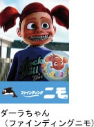
ディズニー映画の「ファインディング・ニモ」を見ましたか？この映画の中で登場する歯科医の娘（ダーラちゃん）は、ブラケットとヘッドギアをして矯正治療をしていましたね。また、「プリティプリンセス」のミア（アン・ハサウェイ）は、リテーナーという保定装置を使っていました。
ハリウッド映画では、頻繁に矯正をしている人物や、話題が出てきます。古いところでは、「カサブランカ」では、ハンフリー・ボガードと、イングリッド・バーグマンの会話で、「十年前、君は何をしていた？」「矯正治療をしていたわ」というやりとりがありました。
「がんばれ！ベアーズ」では、ウォルター・マッソー演じるダメ監督が、テイタム・オニールに、「うちで投げてくれたら、バレエのレッスン料を払おう」に対し、「歯並びを治して、バレエの学校に通って、そしてモデルになるの」との会話がありました。
最近の映画では頻繁に矯正歯科治療をしている俳優が登場しています。
「宇宙戦争」の主役でおなじみのナイスガイ：トム・クルーズも治療していましたが、当時、撮影の時は装置をはずしているとのことでした。「チャーリーズエンジェル」でナチュラルな美しさを見せた女優：キャメロン・ディアスも学童期に矯正治療をしたとのことです。
その他の有名人としては、世界中のテニスファンの注目を浴びている女性テニスプレーヤー：シャラポワも、フィギュアスケートのキム・ヨナも学童期に治療しました。現在放送されているアグリー・ベティという番組はおもしろいですね。日本でも、口元が命ともいえる歌手の世界でも、矯正治療をしている人は増えていますし、某携帯電話のポスターには、治療中のモデルを起用しているほどです。さらに、蒼井優ちゃん、アッキーナ、YUKI、釈由美子、竹内由恵アナウンサー、夏目三久アナウンサー、安田美佐子さん、TOYOTA子供店長のお姉さんの大後寿々花ちゃん、マラソンの土佐礼子さんなど、多数いらっしゃいます。
みなさんもお気づきになっていると思いますが、テレビがどんどん大型化し、ハイビジョンで、顔がアップで映し出されるようになりました。特に若いアナウンサーたちは、歯並びがパーフェクトな人がほとんどです。
このように、今や矯正歯科治療は普及し、一般の理解も得られるようになりました。こそこそと隠れて治療したり、目立たなくしてもらうのではなく、むしろ積極的に治療していることをアピールするようになってきています。
私のクリニックでも、装置を止めるゴム（ブラケットとワイヤーをとめるゴム）を、ピンクやグリーン、ブルーやオレンジなど、いろいろな色を使用して、ファッション感覚で楽しんでいる患者さんが増えてきていますよ。このゴムは、通院時に交換するので、毎回いろいろな色を楽しむことができます。診療室に入るなり、「今日はピンクにしてね！」と、すでに色を決めてきていて、ゴムの着替えを楽しみにしている患者さんも多いですよ！
当院での人気のカラーコーディネートベスト6です！
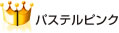
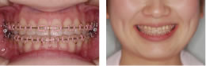
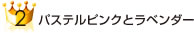
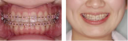
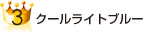
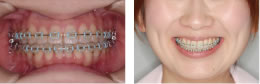
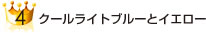
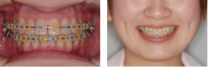
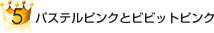
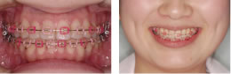
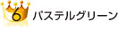
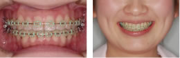
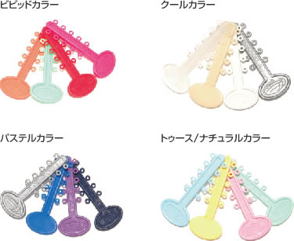
ファッションに合わせて、気分に合わせて、季節に合わせて、カラフルなゴム（エラスティック）で、おしゃれに楽しみましょう！
「見せる（魅せる）矯正」を楽しんでください！
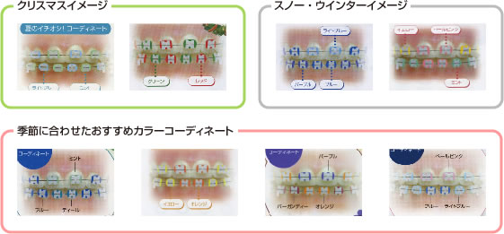